PROLOG+CG
User's Manual
Dr. Adil KABBAJ
Version 2.0
01/12/2000
E-mail: akabbaj@insea.ac.ma
Web : http://prologpluscg.sourceforge.net/
I.N.S.E.A, Rabat, Morocco
Appendix : The grammar of PROLOG+CG
Please report any bugs, problems or suggestions to : Ulrik Petersen
Please note that Prolog+CG version 2.0 is being replaced by a new version under development. The new version will be part of the Amine-platform.
1. Introduction
PROLOG (PROgramming in LOGic) is a programming language that has been designed first (around 1972) for natural language processing and theorem proving. It has been used, since that time in many fields of Artificial Intelligence (AI). Now, PROLOG is a standard programming language in AI.
This manual is not about PROLOG, even if a quick introduction of this language is given as the basic elements of PROLOG+CG are introduced. Several books and documentation concerning PROLOG language are available. This manual is about a descendant of PROLOG : PROLOG+CG which is a conceptual and an object-oriented extension of PROLOG. Indeed, to achieve more expressive power, the PROLOG language has been extended, in the past, in at least two directions :
PROLOG+CG is a conceptual extension of PROLOG in the sense that it integrates Conceptual Graphs (CG) at the basic level. Conceptual Graph (CG) formalism (for background knowledge about CG, please see : http://www.jfsowa.com/cg/index.htm) is a synthesis of several works on semantic networks. CG has been used in many fields of AI, especially natural language processing and knowledge base systems. An integration of CG to Prolog is very interesting. In the Conceptual Graph community, some systems [6, 8, 9] incorporated a deductive component that interprets a set of rules, all the goals of a rule are represented by simple Conceptual Graphs (CG). However, these components do not subsume PROLOG and were not presented as extensions of PROLOG. For instance, no work has been done in the past to develop a Prolog version that provides CG as a basic data structure, beside term and list. PROLOG+CG fulfills this gap in the CG research (i.e., a need for a CG based extension of Prolog) : CG can be used to represent goals (beside terms) and can be used and manipulated as basic data structures, with operations like maximal join, projection (or more precisly subsumption), generalization and unification operations.
PROLOG+CG is a contextual extension of PROLOG in the sense that it integrates notions like objects and inheritance.
Also, PROLOG+CG integrates JAVA : PROLOG+CG can be called from a Java program and a Prolog+CG program can call Java classes.
The integration of Prolog, object oriented programming, the manipulation of CG and Java provides a powerful development environment for the creation of knowledge-based applications and their integration on the web. Java allows the development of multi-platform applications as well as the capabilities of object-oriented languages. Prolog provides the full power of a logic programming language well suited for natural language processing, inference and symbolic manipulations. CGs provide the expressive power of an advanced knowledge representation language (advanced semantic nets, type hierarchy, schemas, notion of context, etc.).
PROLOG+CG is implemented in JAVA 2. A beta version 2.0 is available throw the site PROLOG+CG.
2. Prolog+CG environment and its installation
The integrated environment of PROLOG+CG consists of a text editor, a "compiler", the debugger and the interpreter. The compiler performs a syntactic analysis of the program and if the analysis is successful, it generates an object file that contains an internal representation of the program, in terms of Java structures (vector, hashtable, etc.). Thereafter, the interpreter works on the object file.
At the interface level, the environment provides a split pane; the top pane is used to create/open/edit a program while the bottom pane is used as a console : the user asks a request and the system gives the answer (Figure 1). During the compilation, the console pane becomes a compiler pane where messages concerning this task are written. If the compilation has been successfull, the user has to click inside the pane to switch to the console pane.
The environment provides also a debug window (accessible from the Build menu) and a window that shows the primitive operations of the language (accessible from the Help menu).
Figure 1 gives a snapshot of the PROLOG+CG environment.
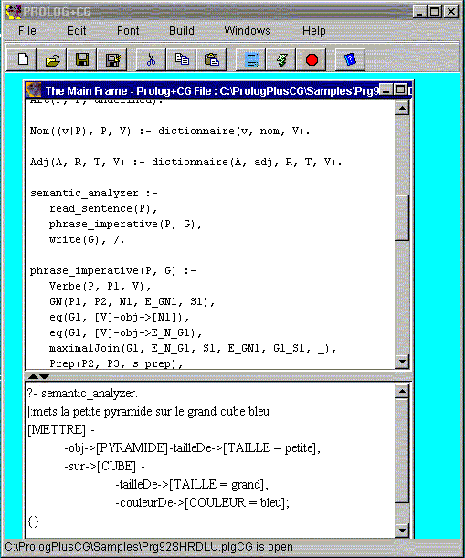
Figure 1: PROLOG+CG Environment
Some of the commands/buttons of the environment are the following (the others are the standards buttons for file and edition processing) :
Compile a Prolog+CG File to produce an object file (if it doesn't exist already)
Execute the interpreter to answer a question
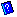 Help
More information on the environment is provided in the next sections.
Installation of PROLOG+CG
Prolog+CG is implemented with JAVA 2. So the JRE of JAVA 2 should be installed first. Then you have to download the PrologPlusCG directory and to put it in your current directory (C for Windows for instance). PrologPlusCG can be executed with the following command (from the DOS Console) : java PrologPlusCG/PrologPlusCG
Currently, the elementary data types are Number (unsigned or negative integer or real : 23, -45, 02.45, -564.675, etc.), Boolean (true, false), a constant identifier and String. A variable identifier is also considered in this section.
Example : "this is a string".
Examples of good identifiers : pr32, papa, is_good, pp34_65.
Examples of illegal identifiers : p45, _rt, p_rt, _rrt.
The identifier of a variable can be either :
Examples of good variable identifiers : _var1, _, _324, _ce_ci, x, x3, x_var.
Note : The grammar of PROLOG+CG is given in Appendix 1.
Composed data types of PROLOG+CG are : term, list , set, concept and CG. They are introduced in the next sections (sets and concepts are considered in CG section).
Example : Figure 2 shows a simple Prolog+CG program that introduces the basic data types of Prolog+CG : the program contains the fact "prologCGData" that has one argument : a list of different elements : an integer, a constant identifier, a string, a boolean, a image file name (see the remark below), a list, a predicate or term and a conceptual graph (CG). The program contains also a rule that defines the goal "dataExple/1" : it search the fact "prologCGData" and call the primitive goal "member" to access (with backtracking) all the elements contained in the list.
The editor of Prolog+CG allows for some hypertext actions. For instance, when the data is a file name of a multi-media data, like "ImgPrlg.png", the user can see the content of this file in a separate window simply by selecting the whole name and by doing a click on the left-button of the mouse. Figure 2 shows the result of theses actions in the case "ImgPrlg.png".
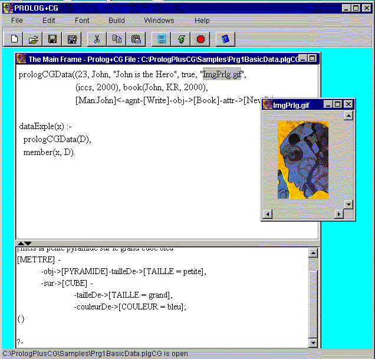
Figure 2: The "hyper-text editor" and basic data in PROLOG+CG
Now, to ask some questions about the above program, you have first to compile it : choose "Build/Compile" from the menu or just press on the corresponding button . Then click in the bottom panel to switch to Console panel and write your request just after the last prompt "?- ". To activate the interpreter for responding to your request, press on the key "return/enter", or choose "Build/Answer Question" or just press on the corresponding button .
Here is the result of one question about the above program :
?-
prologCGData(L).
{L = (23, John, "John is the Hero", false, "ImgPrlg.png", (iccs,
2000), book(John, KR, 2000),
[Write]-
-obj->[Book]-attr->[New],
-agnt->[Man : John])}
?-
A term is an a constant identifier followed optionally by a list of arguments. An argument is either an elementary data type, a variable or a composed data type.
Examples of correct terms :
Prop4, Papa(Abdou), Publisher(Addison, "Conceptual Structure", 1984),
like(Kim, (banana, tomato, juice), [Man: Kim]<-agnt-[Work]-manr->[Hard]),
phrase("kha eats banana", st(np("kha"), vp(vb("eats"), np("banana"))),[Man:kha]<-agnt-[Eat]-obj->[Banana] )
A list can be composed of zero, one or several elements separated by comma. An element of a list is like an argument of a term; it is either an elementary data type, a variable or a composed data type.
Examples of correct lists :
(), (tati), (titi, 34, (356, ps(note(67), (2, 4)), "ha ha")),
(exp32, [Dat = (23, 12, 84)]<-birthOf-[Boy:Cham], 54)
Figure 3 shows the window that is given to the user when he asks for the primitives of the language, either by choosing the menu action Help/Primitives or Windows/Primitives. Each primitive operation is given with its signature (number and types of the arguments). In this section, we consider only the arithmetic, relational, logical, list, stringIdent and multi-media primitive operations. The other types of primitives are introduced later.
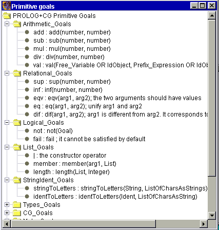
Figure 3: Primitive operations
PROLOG+CG adopts a prefix notation to formulate an expression. Thus, the infix expression : 3 + (4 – 5) should be formulated in PROLOG+CG as : add(3, sub(4, 5)). As shown below, the primitive goal "val(Var, Expr)" evaluates the expression Expr and associates its value to the variable Var. This is how arithmetic computation is done in PROLOG+CG.
?- val(x, add(4, mul(5, 3))).
{x = 19}
Recall : the request must
terminates with a point (.) . To activate the interpreter and get
an answer, the user can either choose the menu action "Build/Answer
Question", or press the button , or just
press "return" key. The interpreter returns {x = 19}
?-val(x, mul(-4, add(6, 4.68))).
{x = -42.72}
?-eq(x, 34), val(y, div(765, x)).
{x = 34, y = 22.5}
?-eqv(x, 54).
Error: any variable in an expression should have a value.
Note the difference
between the two primitives "eq" and "eqv" : eq
corresponds to the unification operation while eqv
corresponds to the identity test; the two arguments of
eqv should have a value.
?-eq(x, 54), eqv(x, 54).
{x = 54}
?-sup(43, -54).
{}
?-inf(-54, -34).
{}
?- eq(x, 34), eq(y, 54), dif(x, y).
{x = 34, y = 54}
?- eq(54, x), val(y, sub(56, 2)), not(eq(x, y)).
no.
?- eq(54, x), val(y, sub(56, 2)), not(dif(x, y)).
{x = 54, y = 54}
?- eq(papa(Hicham, x), papa(y, Nour)).
{x = Nour, y = Hicham}
?- eq((1, 2, 3, 4, 5), (x,y|z)).
{x = 1, y = 2, z = (3, 4, 5)}
?- dif(papa(Hicham, x), papa(y, Nour)).
no
?- dif(papa(Hicham, x), papa(Wasouf, Nour)).
{}
Note : the primitive goal dif(x,
y) is equivalent to :
not(eq(x,y)).
?-fail.
no.
?-stringToLetters("papa", L).
{L = ("p", "a", "p", "a")}
?-stringToLetters(x, ("m", "a", "i")).
{x = "mai"}
?-identToLetters(papa, L).
{L = ("p", "a", "p", "a")}
?-identToLetters(c, ("p", "a", "p", "i")).
{c = papi}
Examples of List operations :
?- member(3, (2, 3, 4, 5)).
{}
?- member(6, (2, 3, 4, 5)).
no.
?-member(x, (2, 3, 4)).
{x = 2}
{x = 3}
{x = 4}
?- length((4, 5, 6, 7), x).
{x = 4}
Multi-media primitive operations : show/2 and close/1
Note : This is just a preliminary work on the integration of multi-media in PROLOG+CG.
The following program illustrates this interesting aspect of the language (sound and video will be integrated in the next version). Again, please note that the text editor enables the user to see, in auxiliary windows, the content of the media files : just select the file name (without the double quotes) and do a click on a let-button of the mouse. As shown in Figure 4, the program contains a fact represented by a conceptual graph (CG) which states that PrologPlusCG is a CGTool with an icon (represented by "ImgPrlg.png"), a manual and a Java Code.
The rule that defines the goal "MMCGExample" searchs for the above fact, shows the image "ImgPrlg.png" in the window "wnd1" and the text file "DocTest.txt" in the window "wnd2". It then waits for an input from the user and then closes the two windows and writes a message. What is relevant here is the use of the two primitive goals : "show/2" and "close/1".
show : show(Window_Identifier, MMFileId_String).
close : close(Window_Identifier)
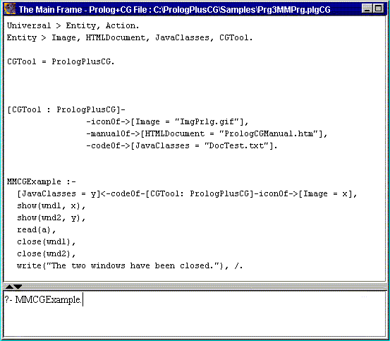
Figure 4 : A multi-media program
The interpretation of the request "MMCGExample." by PROLOG+CG gives the following result :
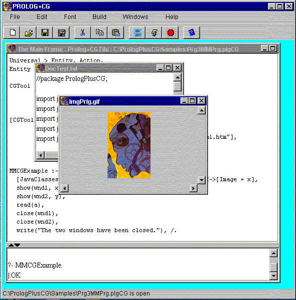
Figure 5 : Execution of the multi-media program
As in PROLOG, a PROLOG+CG program is composed mainly of facts and inference rules.
A fact is a term or a CG followed by a point. An inference rule is composed of a head and a tail, separated by the if symbol ":-" and it terminates with a point. The head of a rule is a term or a CG and the tail is a conjunction of elements, an element can be a term, a CG or a variable. The next section gives a classic example of a Prolog program, formulated in Prolog+CG without the use of CGs. In later sections, we define CG and we present their use in Prolog+CG programs.
The following program can be found in Samples/Meal.prlg. It is a classic example, proposed first by Colmerauer [Colmerauer, 85]. The user can load the example (by opening the file Meal.prlg) and compile it, or he can write and edit the program in the `Program pane'.
meal(a, m, d) :-
| appetizer(a),
main(m), dessert(d). |
main(m) :- fish(m).
main(m) :- meat(m).
appetizer(radishes).
appetizer(pate).
fish(sole).
fish(tuna).
meat(pork).
meat(beef).
dessert(cake).
dessert(fruit).
little_sum(1, x, y) :- little_successor(x, y).
little_sum(x1, y, z1) :-
| little_successor(x, x1),
little_sum(x, y, z), little_successor(z, z1). |
little_successor(1,2).
little_successor(2,3).
little_successor(3,4).
little_successor(4,5).
little_successor(5,6).
little_successor(6,7).
little_successor(7,8).
little_successor(8,9).
light_meal(a, m, d) :-
| meal(a, m, d),
units(a, x), units(m, y), little_sum(x, y, u), units(d, z), little_sum(z, u, v). |
units(beef, 3).
units(fruit, 1).
units(cake, 5).
units(pate, 6).
units(pork, 7).
units(radishes, 1).
units(sole, 2).
units(tuna, 4).
Once the edition task terminated, the user should compile the program by pressing the button (or activating the menu action "Build/Compile"). At this time, the user can save the program (both the text format with the extension .prlg and the object format with the extension .obj) and/or activates the Console pane to ask questions.
Let us ask one question :
?- light_meal(a, m, d).
{a = radishes, m = sole, d = cake}
{a = radishes, m = sole, d = fruit}
{a = radishes, m = tuna, d = fruit}
{a = radishes, m = pork, d = fruit}
{a = radishes, m = beef, d = cake}
{a = radishes, m = beef, d = fruit}
{a = pate, m = sole, d = fruit}
Next time, when the file is opened and compiled directly; without any modification, the system will not recompile it again, it will rather load the object file. But if the text file is modified, the user should recompile and save it.
9. Specialization (Generalization) rules
Before considering in detail conceptual graphs (CG), we will introduce two related notions : concept types hierarchy andinstantiation. The two constitute the support for the manipulation of CGs. Indeed, as introduced later, CG unification and the other CG operations make use of these notions. Figure 6 gives the Prolog+CG primitives for support and CGs manipulation.
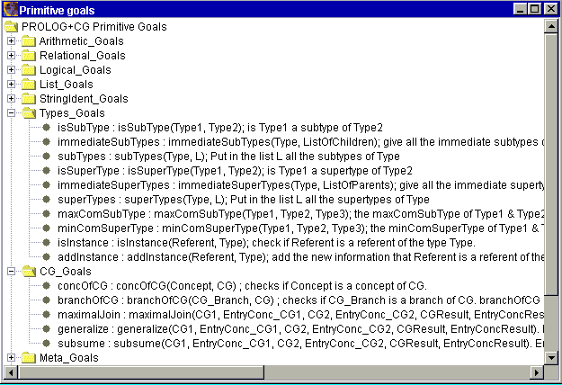
Figure 6 : Prolog+CG primitives for support and CG manipulation
Concept types hierarchy describes the generalization/specialization relation between the concept types used in the CGs. It encodes the famous "IsA" relation, used in many semantic network formalisms. In PROLOG+CG, a concept type hierarchy is defined as a set of specialization rules. A specialization rule describes the immediate subtypes Type1, Type2, …, TypeN of a type Type. It has the following form :
Type > Type1, Type2, …, TypeN.
Example :
Universal > Person, Animal,
Action, Situation, Object, AbstractEntity, Attribute.
Person > Man, Woman.
Man > Boy, Employee.
Woman > Girl, Employee.
Employee > Supervisor.
Action > Drive, Love, Break, Rent, Begin, Press, Look.
Object > Vehicle, Machine, Key, Keyboard, Finger.
AbstractEntity > Society, Session, Years, Proposition.
Vehicle > Car, Truck.
Attribute > Fast, Color, Expensive, Big.
Operations on the concept types hierarchy : Currently, PROLOG+CG providesthe following primitive operationson concept types hierarchy :
Example :
?- isSubType(Supervisor,
Person).
{}
?-isSubtype(Supervisor, Girl).
no.
?-immediateSubTypes(Action, L).
{L = (Drive, Love, Break, Rent, Begin, Press, Look)}
?-subTypes(Person, L).
{L = (Man, Woman, Boy, Employee, Girl, Supervisor)}
?-isSuperType(Person, Supervisor).
{}
?-immediateSuperTypes(Employee, L).
{L = (Man, Woman)}
?-superTypes(Employee, L).
{L = (Man, Woman, Person, Universal)}
?- maxComSubType(Man, Woman, x).
{x = Employee}
?-maxComSubType(Person, Employee, x).
{x = Employee}
?-minComSuperType(Supervisor, Boy, x).
{x = Man}
The instantiation relation relates an instance to its type. In PROLOG+CG, instances of a type are described with an instantiation rule :
Type = Inst1, Inst2, …, InstN.
Instantiation rules are specified as a complement to the specialization rules which describe the concept type hierarchy.
Example (we assume the concept type hierarchy introduced in Section 9) :
Boy = John, Bob, Sam, Andre.
Girl = Sue, Mary.
Color = red.
Machine = res23.
Years = four.
Key = enter.
Operations on instances : PROLOG+CG provides two operations on type instances (figure 6) :
Example :
?- isInstance(Sue, Girl).
{}
?-isInstance(Sue, Person).
{}
?-isInstance(Sue, Boy).
no.
?-isInstance(Karl, Boy).
no.
?-addInstance(Karl, Boy).
{}
?- addInstance(Emp01,
Employee).
{}
Note that following the two above operations, the instantiation rule for the type "Boy" is modified and a new instantiation rule is added for the type "Employee" :
Boy = John, Bob, Sam, Andre,
Karl.
Girl = Sue, Mary.
Color = red.
Machine = res23.
Years = four.
Key = enter.
Employee = Emp01.
(continue ...)
?-isInstance(Karl, Boy).
{}
?- isInstance(Karl, Person).
{}
?-
As noted earlier, a composed data in PROLOG+CG can be a term, a list, a concept or a conceptual graph (CG).
CG. A conceptual graph (CG), in Prolog+CG, is a graph of nodes that represent concepts and that are related by conceptual relations. Only binary relations are considered (this constraint is for simplicity and practical purpose only).
Remark : Prolog+CG provides a large flexibility in the use of variables inside CG : a variable can stand for a whole CG, a whole concept (like : [Man]-agnt->X ; X is a variable), a relation (like : [Man]-R->[Eat] ; R is a variable), a concept type or a concept referent (like : [A : B]-agnt->[Eat] ; A and B are variables). Such a flexible use of variables enhances the expressive power of the language, according to CG manipulation.
Concept. A concept is composed of a type, an optional referent and an optional description. A concept type can be a variable or an identifier that refers to a type defined in the concept type hierarchy. A concept referent can be a variable, an instance (an identifier or a string) declared in instances declaration rules, a set of instances, a co-referent (represented by a variable) or a multi-referent. A concept description is any Prolog+CG data : an elementary data like an integer, a real, a boolean, an identifier, a string or a composed data like a list, a term, a concept or a CG.
A multi-referent has the form "*Number" and it is only used in the linear notation to identify all occurrences of a concept. A multi-referent is not represented in the internal representation of the concept. Examples are given below.
Concept and CG Linear Notation
The linear notation used in PROLOG+CG to express CG is similar to the notation introduced first by Sowa. As introduced above, a concept has tree fields surrounded by brackets.
Examples of concepts :
[Man], [Man : John], [Man : {John, Carl, Henry}], [Cat : x], [Human : *1], [Integer = 25], [List = (1, 2, 3)], [Date :CurrentDate = (04,01,2000)], [Term = papa(x, Hicham)], [Proposition :propHenry = [Man : Carl]<-agnt-[Think]-obj->[Proposition =
[Man: Carl]-attr->[Crazy] ] ]
A relation R between two concepts C1 and C2 can be expressed as follow : [C1]-R->[C2] ; R of C1 is C2, or [C2]<-R-[C1] which is the same.
Example of a simple CG :
[Girl : Fouzia]<-agent-[Walk] ; agent of Walk is Girl Fouzia.
If a concept is connected to several relations, writes the concept, then a dash followed by a sequence of relations description separated by comma (see the Appendix for the detailed definition of CG grammar). Also, the CGs given in this manual illustrates several cases of writing CG.
Example of CG - continued :
[Extract]-
-agnt->[Person],
-obj->[Text],
-target->[Book].
The role of the hyphen "-", the comma "," and the semi-colon ";" : if a concept (like [Extract]) has several branchs connected to it, then write the "-" after the concept, write the branchs using "," to seperate between them and use at the end the ";" to indicate the end of the specification of the branchs. In this sense, the branchs of a concept are enclosed by two delimiters : "-" and ";" and they are separated by the delimiter ",". Note that the delimiter ";" is optional if we are at the end of the CG, like the example above.Of course, a concept at the end of a relation can be connected itself to other relations and so on, forming a tree (and a graph as described below). This case is illustrated by the following example :
Example :
[Work]-
| -agnt->[Person: Jane]- | |||
| -ageOf->[Age = 30],
<-poss-[House : *1];, |
|||
| -near->[House : *1]. | |||
In the example above, the delimiter ";" is used to specify the end of the specification of the branchs of [Person : Jane] and the delimiter "," that follows ";" is used to separate between the two branchs of [Work].
Finally, note that the tabulation and carriage-return are used only for "pretty-print"; they are not considered in the analysis of the notation.
A linear formulation of any graph (and hence, of a CG) provides in general a way to specify several occurrences of the same node (the same concept for CG). In PROLOG+CG, referent and/or multi-referent is used for this end. In the above example, the multi-referent "*1" is used to specify that the two concepts [House : *1] and [House : *1] are in fact two occurrences of the same concept.
Relations that are connected to a concept can be specified as relations connected to the occurrences of the same concept.
Example :
[Extract]-
-agnt->[Person],
-obj->[Inanimate : *1]-matr->[Wood],
-manr->[Strong],
-target->[Inanimate]-on->[Inanimate :
*1]-priceOf->[Expensive].
Example of compound CG :
[Person]<-agnt-[Perform]-obj->[Action =
[Eat]-
-obj->[Walnut = wal2]-part->[Shell:myShell = toto],
-instr->[Spoon]-matr->[Shell : myShell]
]-instr->[Roulette].
Maybe a better formulation is as follows :
[Action = [Eat]-
-obj->[Walnut = wal2]-part->[Shell : myShell = toto],
-instr->[Spoon]-matr->[Shell : myShell]
]<-obj-[Perform]-
-agnt->[Person],
-instr->[Roulette].
Note that the two concepts [Shell : myShell = toto] and [Shell : myShell] are the same. They are identified by the referent (myShell). Thus, when the concept has a specific referent, this later can be used (instead of a multi-referent) to specify the identity of several occurrences of the same concept.
Co-references
A Co-reference is represented with a
variable. An example will illustrate this important notion :
[Man : x]<-agnt-[Begin]-srce->[Proposition =
[Person]<-pat-[Look]-dest->[Person : x] ]
The variable x plays a role of a co-reference between the two concepts [Man : x] and [Person : x]. Thus, the two concepts refere to the same entity.
With the above illustrations concerning CG notation, the user can combine them in order to formulate any CG.
The use of CG in PROLOG+CG : In PROLOG+CG, CG is a basic data structure, like a term or a list. CG can be an argument of a term, an element in a list, a value of a concept, the head of a rule (or a fact) or a goal in the tail of a rule.
To illustrate the use of CG in PROLOG+CG, we give in this section two programs. The first has been proposed first by Fargues et al. [6] (which is a Prolog-based formulation of an example presented by Sowa, using Peirce Logic). In the first program, all the goals are formulated as CGs. In general however, we can have in one rule some goals that are represented by CGs and others that are represented by terms. The second program illustrates this point.
Program 1 (it can be found in Samples/Citizen.prlg) :
Universal > PERSON, BORN, NATURALIZE, COUNTRY.
PERSON > CITIZEN, GIRL.
GIRL = "Dorothy".
PERSON = "Tinman".
COUNTRY = "Oz".
[CITIZEN : x]<-MEMB-[COUNTRY : "Oz"] :-
| [PERSON: x]<-AGNT-[BORN]-LOC->[COUNTRY : "Oz"]. |
[CITIZEN : x]<-MEMB-[COUNTRY : "Oz"] :-
| [PERSON: x]<-CHLD-[PERSON: y],
[CITIZEN : y]<-MEMB-[COUNTRY : "Oz"]. |
[CITIZEN : x]<-MEMB-[COUNTRY : "Oz"] :-
| [PERSON : x]<-RCPT-[NATURALIZE]-LOC->[COUNTRY : "Oz"]. |
[PERSON : "Tinman"]-
| -CHLD->[GIRL : "Dorothy"],
<-AGNT-[BORN]-LOC->[COUNTRY : "Oz"]. |
Let us ask some requests :
?- [CITIZEN : x]<-MEMB-[COUNTRY : y].
{x = "Tinman", y = "Oz"}.
?- [CITIZEN : "Dorothy"]<-MEMB-[COUNTRY : "Oz"].
no.
Program 2 (it can be found in Samples/GoodSister.prlg) :
Universal > Person, Action, Object, Attribute.
Object > House, Restaurant, Walnut, Shell, Spoon.
Attribute > Classical, Age, Easily.
Person > Man, Woman.
Action > Perform, Go, Work, Buy, Eat, Search.
Man = Jo, Mark.
Woman = Mary, Jane.
// Prolog+CG rules. Notes that a goal can be a term or a CG.
// x, w and a are variables.
goodSister(x) :-
| employee(x),
[Woman : x]-attr->[Classical]. |
[Woman : w]-attr->[Classical] :-
| [Work]- | ||
| -near->[House]-poss->[Woman : w]-ageOf->[Age
= a],
-agnt->[Woman : w], |
||
| inf(a, 40). | ||
// *1 is a multi-referent.
[Work]-
| -agnt->[Person : Jane]- | |||
| -ageOf->[Age = 30],
<-poss-[House : *1]<-nearOf-[Restaurant];, |
|||
| -near->[House : *1]. | |||
employee(Mary).
employee(Jane).
// An example of compound CG
[Person]<-agnt-[Perform]-obj->
| [Action = [Eat]- | |||
| -obj->[Walnut=wal2]-part->[Shell:myShell =
toto],
-instr->[Spoon]-matr->[Shell : myShell] |
|||
| ]-manr->[Easily]. | |||
sense("extract", [Search]-
| -agnt->[Person],
-from->[Book], -obj->[Information]). |
sense("classical woman", [Woman]-attr->[Classical]).
Let us consider now some questions :
?- goodSister(x).
{x = Jane}
?- goodSister(Mary).
no.
?- [Woman : x]-attr->[Classical].
{x = Jane}
The next two requests illustrate how the compound CG are naturally expressed and manipulated in PROLOG+CG (like simple CG). Note that an embedded CG is considered in PROLOG+CG as a value of the concept (not as a referent).
?- [Man]<-agnt-[Perform]-obj->[Action = [Eat]-obj->[Walnut]-part->[Shell : x] ].
{x = myShell}
?- [Man]<-agnt-[Perform]-obj->[Action = x].
{x = [Eat]-
| -obj->[Walnut = wal2]-part-> | ||
| [Shell:myShell = toto]<-matr-[Spoon : *1], | ||
| -instr->[Spoon : *1]} | ||
?- sense("extract", g).
{g = [Search]-
| -agnt->[Person],
-from->[Book], -obj->[Information]} |
In the next request, the variable x stand for the concept type. Thus we can reason and manipulate all the fields of a concept (the type, the referent and the value).
?- sense("extract", [x]<-obj-[Action]-agnt->[Person]).
{x = Information}
?- sense("extract", [x]<-obj-[Work]-agnt->[Person]).
no.
The following request is interesting : the second goal is a variable that will be unified, after the satisfaction of the first goal, to a CG. So the request is to search the CG associated to "classical woman" and then try to solve it (as the next goal of the request).
?- sense("classical woman", g), g.
{g = [Woman]-attr->[Classical]}
Actually, PROLOG+CG provides the following operations on CG, for both simple and compound CG with sets and co-references (Figure 6) :
These operations are provided also with entry points which are very usefull in natural language processing, as illustrated in section 14 (sample III).
In the next version of PROLOG+CG, other CG operations will be added : IsCanonic, Expand Concept, Contract and Analog.
Examples of calling CG operations (it can be found in Samples/ExpleCGs.prlg) :
To facilitate the demo, the program contains already the specification of some CGs.
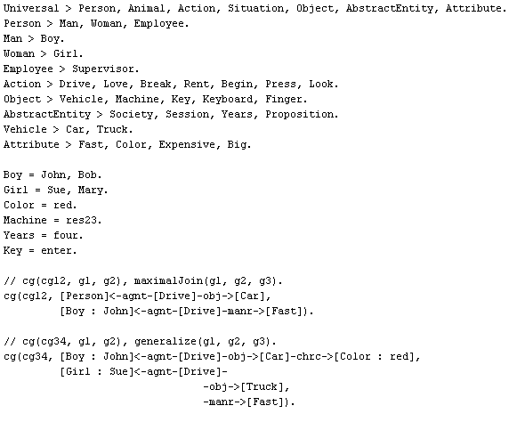
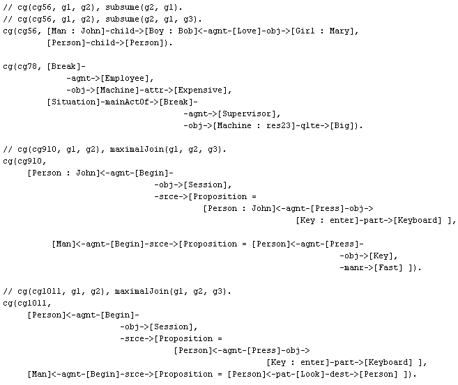
Let us asks some requests :
?- concOfCG([Drive], [Drive]-obj->[Car]).
{}
?- concOfCG(c, [Man : John]-child->[Boy : Bob]<-agnt-[Love]-obj->[Girl : Mary]).
{c = [Man : John]}
{c = [Boy : Bob]}
{c = [Love]}
{c = [Girl : Mary]}
?- concOfCG([Person : x], [Man : John]-child->[Boy : Bob]<-agnt-[Love]-obj->[Girl : Mary]).
{x = John}
{x = Bob}
{x = Mary}
?-
branchOfCG([Person : x]-child->C, [Man : John]-
-child->[Boy : Bob],
-attr->[Color :black],
-child->[Girl : Mary],
<-agnt-[Eat] ).
{x = John, C = [Boy : Bob]}
{x = John, C = [Girl : Mary]}
- Search the relations that relate two persons x and y : note that the relation is represented by a variable.
?-
branchOfCG([Person : x]-R->[Person : y], [Man : John]-
-child->[Boy : Bob],
-attr->[Color :black],
-child->[Girl : Mary],
<-agnt-[Eat] ).
{x = John, R = child, y = Bob}
{x = John, R = child, y = Mary}
- Gives all the branches of a CG :
?-
branchOfCG(b, [Man : John]-
-child->[Boy : Bob],
-attr->[Color :black],
-child->[Girl : Mary],
<-agnt-[Eat] ).
{b = [Man : John]-child->[Boy : Bob]}
{b = [Man : John]-attr->[Color : black]}
{b = [Man : John]-child->[Girl : Mary]}
{b = [Eat]-agnt->[Man : John]}
The other CG operations (unification, subsume, maximalJoin, generalize)
Unification operation: eq/2 corresponds to the unification operation
eq(Concept c1, Concept c2) and eq(CG g1, CG g2) :
?- eq([Person : John], [Man : x]).
{x = John}
?- eq([Person : John], [Woman : x]).
no.
? member([Person : x], ([Man : John], [Color : red], [Woman : Mary])).
{x = John}
{x = Mary}
- Unification on simple CGs with sets : it fails since Andre is not specified in the set {John, Bob, Sam}.
?- eq([Person : Andre]<-agnt-[Drive]-obj->[Vehicle : myCar],
[Boy : {John, Bob, Sam}]<-agnt-[Drive]-
-obj->[Car :x],
-manr->[Fast]).
no.
?- eq([Person : Bob]<-agnt-[Drive]-obj->[Vehicle : myCar],
[Boy : {John, Bob, Sam}]<-agnt-[Drive]-
-obj->[Car :x],
-manr->[Fast]).
{x = myCar}
- Unification on compound CGs with co-referents : the unification succeeds since, apart from the unification of the other components of the two CGs, the co-reference `x' between [Person : x] and [Man : x] in the first CG can be unified with the co-reference `Andre' between [Man : Andre] and [Boy : Andre] in the second CG. Indeed, the concepts [Person : x]/[Man : x] refer to the same entity and this is also the case for the concepts [Man : Andre]/[Boy : Andre].
?- eq([Person : x]<-agnt-[Begin]-srce->[Proposition = [Man : x]<-agnt-[Action]-obj->[Object]],
[Man : Andre]<-agnt-[Begin]-
-obj->[Session],-srce->[Proposition = [Boy:Andre]<-agnt-[Press]-obj-> [Key :enter]-part->[Keyboard]]).
{x = Andre}
- Unification on compound CGs with co-referents : here, the unification fails since the co-reference `x' in the first CG can't be unified.
?- eq([Person : x]<-agnt-[Begin]-srce->[Proposition = [Man : x]<-agnt-[Action]-obj->[Object]],
[Man : Andre]<-agnt-[Begin]-
-obj->[Session],-srce->[Proposition = [Boy :John]<-agnt-[Press]-obj->[Key:enter]-part->[Keyboard]]).
no.
- Unification on compound CGs with co-referents : here, the unification fails too since the co-reference `x' in the first CG has no corresponding co-reference in the second CG.
?- eq([Person : x]<-agnt-[Begin]-srce->[Proposition = [Man : x]<-agnt-[Action]-obj->[Object]],
[Man]<-agnt-[Begin]-
-obj->[Session],
-srce->[Proposition =
[Boy]<-agnt-[Press]-obj->[Key : enter]-part->[Keyboard]]).
no.
?- subsume([Person]-child->[Person],[Man:John]-child->[Boy:Bob]<-agnt-[Love]-obj->[Girl:Mary]).
{}
?- subsume([Person]-child->[Person],
[Man:John]-child->[Boy:Bob]<-agnt-[Love]-obj->[Girl:Mary], g3).
{g3 = [Man :John]-child->[Boy : Bob]}
- Subsume on simple CGs with sets :
?- subsume([Person]-child->[Person : {John, Sam}],
[Man : John]-child->[Boy : {Bob, John, Andre, Sam}]<-agnt-[Love]-obj->[Girl : Mary]).
{}
- The same request but we specify the third argument to get the image of the first argument :
?- subsume([Person]-child->[Person : {John, Sam}],
[Man : John]-child->[Boy : {Bob, John, Andre, Sam}]<-agnt-[Love]-obj->[Girl : Mary], g).
{g = [Man : John]-child->[Boy : {Bob, John, Andre, Sam}]}
- Subsume fails since the set {John, Sam} is not included in the set {Bob, John, Andre} :
?-subsume([Person]-child->[Person : {John, Sam}],
[Man : John]-child->[Boy : {Bob, John, Andre}]<-agnt-[Love]-obj->[Girl : Mary]).
no.
- Subsume on compound CGs without co-references :
?- subsume([Person ]<-agnt-[Begin]-srce->[Proposition = [Person]<-agnt-[Action]-obj->[Object]],
[Man]<-agnt-[Begin]-
-obj->[Session],
-srce->[Proposition =[Boy]<-agnt-[Press]-obj->[Key:enter]-part->[Keyboard]],g).
{g = [Begin] -
-srce->[Proposition = [Press] -
-obj->[Key : enter],
-agnt->[Boy] ],
-agnt->[Man]}
- Subsume on compound CGs with co-reference : The same request as the precedent but a co-reference `x' is added in the first argument. Subsume fails in this case since the co-reference `x' is not mapped to a co-reference in the second CG : the first CG doesn't totally subsume the second CG; the information that the two concepts [Person : x] and [Person : x] refers to the same entity is not found in the second CG since the corresponding concepts in the second CG [Man] and [Boy] could refer to different entities.
?- subsume(
[Person :x]<-agnt-[Begin]-srce->[Proposition = [Person:x]<-agnt-[Action]-obj->[Object]],
[Man]<-agnt-[Begin]-
-obj->[Session],
-srce->[Proposition =
[Boy]<-agnt-[Press]-obj->[Key:enter]-part->[Keyboard]],g).
no.
- Subsume on compound CGs with co-reference : The same request as the precedent but a co-reference `y' is added to the second CG. Subsume is possible in this case since the constraint imposed by the co-reference in the first CG is verified by a corresponding co-reference in the second CG.
?- subsume(
[Person :x]<-agnt-[Begin]-srce->[Proposition = [Person:x]<-agnt-[Action]-obj->[Object]],
[Man : y]<-agnt-[Begin]-
-obj->[Session],
-srce->[Proposition =
[Boy: y]<-agnt-[Press]-obj->[Key :enter]-part->[Keyboard]], g).
{x = FREE, y = FREE, g = [Begin] -
-srce->[Proposition = [Press] -
-agnt->[Boy : y],
-obj->[Key : enter]],
-agnt->[Man : y]}
maximalJoin operation
?- cg(cg12, g1, g2),
maximalJoin(g1, g2, g3).
{g1 = [Drive] -
-obj->[Car],
-agnt->[Person], g2 = [Drive] -
-manr->[Fast],
-agnt->[Boy : John], g3 = [Drive] -
-agnt->[Boy : John],
-obj->[Car],
-manr->[Fast]}
- MaximalJoin on simple CGs with sets :
?- maximalJoin([Person : {Bob, Andre}]<-agnt-[Drive]-obj->[Car],
[Boy : {John, Bob, Sam}]<-agnt-[Drive]-manr->[Fast], g).
{g = [Drive] -
-agnt->[Boy : {John, Bob, Sam, Andre}],
-obj->[Car],
-manr->[Fast]}
- MaximalJoin on simple CGs with coercion and set :
?- maximalJoin([Person : Andre]<-agnt-[Drive]-obj->[Car],
[Boy :{John, Bob, Sam}]<-agnt-[Drive]-manr->[Fast], g).
{g = [Drive] -
-agnt->[Boy : {John, Bob, Sam, Andre}],
-obj->[Car],
-manr->[Fast]}
- Maximal Join failure : coercion impossible since Mary is not conform to Boy :
?- maximalJoin([Person : Mary]<-agnt-[Drive]-obj->[Car],
[Boy : {John, Bob, Sam}]<-agnt-[Drive]-manr->[Fast], g).
no.
- Maximal join on compound CGs :
?- cg(cg910, g1, g2),
maximalJoin(g1, g2, g3).
{g1 = [Begin] -
-obj->[Session],
-srce->[Proposition = [Press] -
-obj->[Key : enter]-part->[Keyboard],
-agnt->[Person : John]],
-agnt->[Person : John], g2 = [Begin] -
-srce->[Proposition = [Press] -
-obj->[Key],
-manr->[Fast],
-agnt->[Person]],
-agnt->[Man],
g3 = [Begin] -
-srce->[Proposition = [Press] -
-obj->[Key : enter]-part->[Keyboard],
-agnt->[Person : John],
-manr->[Fast]],
-agnt->[Man : John],
-obj->[Session]}
Concerning the next request, notes that the maximalJoin of the embeeded graphs :
[Press] -
-obj->[Key : enter]-part->[Keyboard],
-agnt->[Person]
and
[Look] -
-dest->[Person],
-pat->[Person]
will discover that the two graphs have nothing in common except the [Person] concept. Thus, the maximalJoin will be done around the concept [Person] of the first graph and one concept [Person] of the second.
?- cg(cg1011, g1, g2),
maximalJoin(g1, g2, g3).
{g1 = [Begin] -
-obj->[Session],
-srce->[Proposition = [Press] -
-obj->[Key : enter]-part->[Keyboard],
-agnt->[Person]],
-agnt->[Person], g2 = [Begin] -
-srce->[Proposition = [Look] -
-dest->[Person],
-pat->[Person]],
-agnt->[Man],
g3 = [Begin] -
-srce->[Proposition = [Press] -
-agnt->[Person]<-pat-[Look]-dest->[Person],
-obj->[Key : enter]-part->[Keyboard]],
-agnt->[Man],
-obj->[Session]}
- maximalJoin on compound CGs with co-references
To illustrate the interplay between co-references and maximal join, we will change, in the above program the fact cg(cg1011, ...) as follows : we add a co-reference, represented by the variable x, between the two concepts [Person : x] and [Person : x] in the first CG.
cg(cg1011,
[Person :
x]<-agnt-[Begin]-
-obj->[Session],
-srce->[Proposition =
[Person : x]<-agnt-[Press]-obj->
[Key : enter]-part->[Keyboard] ],
[Man]<-agnt-[Begin]-srce->[Proposition =
[Person]<-pat-[Look]-dest->[Person] ]).
As shown by the following request, the CG g3 that results from the maximalJoin of the two CG g1 and g2 will contain the above coreference. In fact, coreference is considered as an implicit relation between the two concepts. So, in the maximalJoin, such a relation will remain.
?- cg(cg1011, g1, g2),
maximalJoin(g1, g2, g3).
{g1 = [Begin] -
-obj->[Session],
-srce->[Proposition = [Press] -
-obj->[Key : enter]-part->[Keyboard],
-agnt->[Person : x]],
-agnt->[Person : x],
g2 = [Begin] -
-srce->[Proposition = [Look] -
-dest->[Person],
-pat->[Person]],
-agnt->[Man],
g3 = [Begin] -
-srce->[Proposition = [Press] -
-agnt->[Person : x]<-pat-[Look]-dest->[Person],
-obj->[Key : enter]-part->[Keyboard]],
-agnt->[Man : x],
-obj->[Session]}
Now and to illustrate the impact of co-references on maximal join, we will change, in the above program the fact cg(cg1011, ...) as follows :
cg(cg1011,
[Person :
x]<-agnt-[Begin]-
-obj->[Session],
-srce->[Proposition =
[Person
: x]<-agnt-[Press]-obj->
[Key
: enter]-part->[Keyboard] ],
[Man :
y]<-agnt-[Begin]-srce->[Proposition =
[Person]<-pat-[Look]-dest->[Person : y]
]).
The variable x is a co-reference between the two concepts [Person : x] and [Person :x] and the variable y is a co-reference between the two concepts [Man : y] and [Person : y].
To make the above change effective, we have to recompile the program and then ask the same request :
?- cg(cg1011, g1, g2),
maximalJoin(g1, g2, g3).
{g1 = [Begin] -
-obj->[Session],
-srce->[Proposition = [Press] -
-obj->[Key : enter]-part->[Keyboard],
-agnt->[Person : x]],
-agnt->[Person : x], g2 = [Begin] -
-srce->[Proposition = [Look] -
-dest->[Person : y],
-pat->[Person]],
-agnt->[Man : y],
g3 = [Begin] -
-srce->[Proposition =
[Press] -
-agnt->[Person : x]<-dest-[Look]-pat->[Person],
-obj->[Key : enter]-part->[Keyboard]],
-agnt->[Man : x],
-obj->[Session]}
?-
If you look at the result g3 and especially at the embedded graph :
[Press] -
-agnt->[Person
: x]<-dest-[Look]-pat->[Person],
-obj->[Key :
enter]-part->[Keyboard]
you will note that it is different from the previous one : the maximalJoin between the two initial graphs has been done around the destination (dest) of [Look], not the patient. The reason is this : since the concept [Person : x] in g1 (in the first level of g1) has been joined with the concept [Man : y] in g2 and since the embedded graphs that contain the concepts [Person : x] and [Person : y] will be joined, then we must begin their maximalJoin by joining the concept [Person : x] with the [Person : y]. Note also that the resulting graph g3 contains the co-reference x that relates the concept that results from the join of [Person : x] and [Man : y] with the concept that results from the join of [Person : y] and [Person : y].
?- cg(cg34, g1,
g2), generalize(g1, g2, g3).
{g1 = [Drive] -
-obj->[Car]-chrc->[Color : red],
-agnt->[Boy : John], g2 = [Drive] -
-obj->[Truck],
-manr->[Fast],
-agnt->[Girl : Sue], g3 = [Drive] -
-obj->[Vehicle],
-agnt->[Person]}
- generalize on simple CGs with sets : the case of intersection between sets
?- generalize([Person : {John, Sam, Sue, Mary}]<-agnt-[Drive]-obj->[Car]-chrc->[Color : red],
[Girl : {Sue, Mary, Katy}]<-agnt-[Drive]-
-obj->[Truck],
-manr->[Fast], g).
{g = [Drive] -
-obj->[Vehicle],
-agnt->[Person : {Sue, Mary}]}
- Generalize on simple CGs with sets : the case of membership of an element to a set
?- generalize([Person : {John, Sam, Sue, Mary}]<-agnt-[Drive]-obj->[Car]-chrc->[Color : red],
[Girl : Sue]<-agnt-[Drive]-
-obj->[Truck],
-manr->[Fast], g).
{g = [Drive] -
-obj->[Vehicle],
-agnt->[Person : Sue]}
- generalization of compound CGs with co-references : Generalize treats co-references as it does with relations : in this example, since the co-reference `x' in the first argument g1 has no corresponding co-reference in the second argument, then no co-reference is added to the resulted graph g.
?- generalize(
[Person: x]<-agnt-[Begin] -
-obj->[Session],
-srce->[Proposition = [Press] -
-obj->[Key : enter]-part->[Keyboard],
-agnt->[Person : x] ],
[Man]<-agnt-[Begin]-srce->[Proposition = [Boy]<-agnt-[Action]-dest->[Person] ], g).
{x = FREE, g = [Begin] -
-srce->[Proposition = [Action]-agnt->[Person]],
-agnt->[Person]}
Impact of co-references on generalize : In the current definition and implementation of generalize, we consider the following heuristic about treatment of co-references : if both the first and the second arguments (let's call them g1 and g2) contain co-referents, like in this example (represented by variable `x' and `y' respectively), and if the generalization of the first level of the two CGs involves a common generalization of the two co-references (i.e. generalization of [Person : x] in g1 with [Man : y] in g2 producing [Person : c01] in the resulting CG g), and if the context [Proposition : …] in g1 is being generalized with the context [Proposition : …] in g2, then the generalization of the contain of these two contexts will be constrained by the generalization of the co-references `x' and `y' : the concept [Person : x] in the context embedded in g1 MUST BE generalized with the concept [Person : y] in the context embedded in g2. The result is the concept [Person : c01] which is in co-reference with the concept [Person : c01], the two are concepts of the resulted CG g. Note that this graph is different from the resulted CG of the precedent example. As this example shows, with the above heuristic, we preserve the specific information that the two contexts [Proposition …] and [Proposition …] contains the same entity, refereed in the first context by [Person : x] and in the second by [Person : y]. However, we loose other information like that the two contexts contain the information : [Action]-agnt->[Person]. A better solution may be a conjunction of the two information : [Person : c01] and [Action]-agnt->[Person]. Further study is required for the treatment of co-references by the generalization operation (depending on the interpretation given to it).
?- generalize(
[Person:
x]<-agnt-[Begin] -
-obj->[Session],
-srce->[Proposition = [Press] -
-obj->[Key : enter]-part->[Keyboard],
-agnt->[Person : x] ],
[Man: y]<-agnt-[Begin]-srce->[Proposition : [Boy]<-agnt-[Action]-dest->[Person : y] ], g).
{x = FREE, y = FREE, g = [Begin] -
-srce->[Proposition : [Person : c01]],
-agnt->[Person : c01]}
14. Sample III : Semantic analyzer
This example illsutrates the expressive power that results from the integration of CG to PROLOG and also the possibility to manipulate directly CG from a programming language perspective. For instance, this example shows how variables can be used to stand for concept type, concept referent, concept value, for the whole concept or even for a relation. The example illustrates also how a CG can be constructed by successive calls to maximal join on other CGs. Finally, it is our hope the convince the reader that PROLOG+CG is very suited for natural language processing. See SHRDHLCom for a detailed description of the program.
Universal > Personne, Objet, Action, Attribut.
Personne > Homme.
Objet > PYRAMIDE, CUBE.
Action > METTRE.
Attribut > TAILLE, COULEUR.
COULEUR = bleu, rouge.
TAILLE = petite, grand.
Homme = john.
dictionnaire("mets", verbe, METTRE).
dictionnaire("pyramide", nom, PYRAMIDE).
dictionnaire("cube", nom, CUBE).
dictionnaire("petite", adj, tailleDe, TAILLE, petite).
dictionnaire("rouge", adj, couleurDe, COULEUR, rouge).
dictionnaire("grand", adj, tailleDe, TAILLE, grand).
dictionnaire("bleu", adj, couleurDe, COULEUR, bleu).
dictionnaire("sur", prep, sur).
dictionnaire("la", art, x).
dictionnaire("le", art, x).
Verbe((v|P), P, V) :- dictionnaire(v, verbe, V).
Prep((v|P), P, V) :- dictionnaire(v, prep, V).
Art((v|P), P, V) :- dictionnaire(v, art, V), /.
Art(P, P, undefined).
Nom((v|P), P, V) :- dictionnaire(v, nom, V).
Adj(A, R, T, V) :- dictionnaire(A, adj, R, T, V).
semantic_analyzer :-
read_sentence(P),
phrase_imperative(P, G),
write(G), /.
phrase_imperative(P, G) :-
Verbe(P, P1, V),
GN(P1, P2, N1, E_GN1, S1),
eq(G1, [V]-obj->[N1]),
eq(G1, [V]-obj->E_N_G1),
maximalJoin(G1, E_N_G1, S1, E_GN1, G1_S1, _),
Prep(P2, P3, s_prep),
GN(P3, (), N2, E_GN2, S2),
eq(G2, [V]-s_prep->[N2]),
eq(G2, [V]-s_prep->E_N_G2),
maximalJoin(G2, E_N_G2, S2, E_GN2, G2_S2, _),
eq(E_V_GS1-obj->x, G1_S1),
eq(E_V_GS2-s_prep->y, G2_S2),
maximalJoin(G1_S1, E_V_GS1, G2_S2, E_V_GS2, G, _).
GN(P, P1, N, E, G) :-
Art(P, P2, A1),
AdjsSynt(P2, P3, L_Adjs),
Nom(P3, P4, N),
SemAdjs(L_Adjs, N, A1, S, E1),
AdjsSynt(P4, P1, L_Adjs2),
SemAdjs(L_Adjs2, N, A1, S1, E11),
maximalJoin(S, E1, S1, E11, G, E).
AdjsSynt((A|P), P1, (A|L_Adjs)) :-
dictionnaire(A, adj, _, _, _),
AdjsSynt(P, P1, L_Adjs), /.
AdjsSynt(P, P, ()).
SemAdjs((A|P), N, A1, S, E_N_S) :-
Adj(A, R1, T1, V1),
eq(G, [N : A1]-R1->[T1 = V1]),
eq(G, E_N-R1->x),
SemAdjs2(P, G, E_N, N, A1, S, E_N_S), /.
SemAdjs((), N, A1, G, E) :-
eq(G, [N : A1]),
eq(G, E-rel->[Universal]), /.
SemAdjs2((A|P), G, E_N, N, A1, S, E_S) :-
Adj(A, R, T, V),
eq(G1, [N : A1]-R->[T = V]),
eq(G1, E_N1-R->x),
maximalJoin(G, E_N, G1, E_N1, G2, E_N2),
SemAdjs2(P, G2, E_N2, N, A1, S, E_S), /.
SemAdjs2((), G, E, _, _, G, E).
?- semantic_analyzer.
|:mets la petite pyramide rouge sur le grand cube bleu
[METTRE] -
-obj->[PYRAMIDE] -
-tailleDe->[TAILLE = petite],
-couleurDe->[COULEUR = rouge];,
-sur->[CUBE] -
-tailleDe->[TAILLE = grand],
-couleurDe->[COULEUR = bleu]
{}
?-
Figure 7 presents the current meta-operations of PROLOG+CG : cut : "/", free, findall, read , read_sentence, write, asserta, assertz, retract, suppress, term_list , set_list, and createInstance (this operator is introduced later, in another section). Except createInstance, meta-operations are similar to the corresponding ones in the other PROLOG versions. Of course we have extended them to consider CG as another basic data structure. For instance, the fact to assert may be represented by a CG (not only a term).
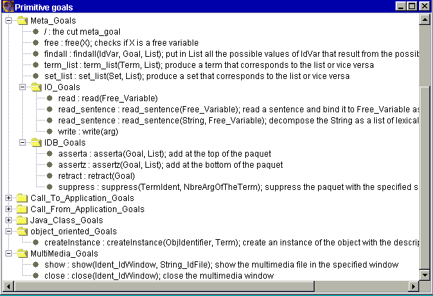
Figure 7 : Meta-Goals of PROLOG+CG
To control the resolution process and to get a more efficient search engine, PROLOG+CG, like the most Prolog versions, provides the cut operator (represented often by "/"). The cut operator "/" is considered as a term with a special identifier ("/") and no arguments. It can be used as a goal in the tail of an inference rule.
Example :
OurMember(e, (e | _)) :- /.
OurMember(e, (_ | x)) :- OurMember(e, x), /.
?- OurMember(x, (1, 3, 5, 7)).
{x = 1}
?-
Operator free/1 :free(Variable) ; check if the variable is free
Example :
?- free(x).
{}
?- eq(x, 45), free(x).
no
Operator findall/3 :findall(Variable, Goal, List) ; return in List all the values of Variable that result from all the possible resolution of Goal
Example :
donnee(4, jjj).
donnee(5, hhh).
donnee(6, kkkk).
data(10, kkk).
data(20, ddd).
data(30, ffff).
data(40, rrrr).
datum(x) :-
donnee(x, _).
datum(x) :-
data(x, _).
ex(m) :-
findall(a, datum(a), L),
moyenne(L, m), /.
moyenne(L, m) :-
length(L, n),
somme(L, 0, s),
val(m, div(s, n)), /.
somme((x|L), s1, s2) :-
val(s3, add(x, s1)),
somme(L, s3, s2), /.
somme((), s, s).
?-ex(m).
{m = 16.428571428571427}
?-
Operatorread : read(Free_Variable)
The argument of "read" should be a free variable at the moment of its execution. When a read operation is executed, the system will prompt the user with the symbol "|:" and the user should give his data which could take several lines (a simple data like a number, a boolean, an identifier, a string or a composed data like a term, a list or a CG) and it should terminate with a point ".". Once his data is edited, the user should press on the key "Enter".
Example :
?- read(x).
|: papa(Ahmed,
Goerge).
{x = papa(Ahmed, Goerge)}
?-
Operator read_sentence : read_sentence(Free_Variable)
read_sentence reads a sentence (i.e. a sequence of characters) and returns the list of "words" that composes it.
Example :
?- read_sentence(p).
|: this is a simple sentence, with a comma inside.
{p = ("this", "is", "a", "simple", "sentence", ",", "with", "a", "comma", "inside", ".")}
Operator read_sentence : read_sentence(Sentence, Free_Variable)
read_sentence returns in its second argument the list of words that compose its first argument (which is a String).
Example :
?- read_sentence("this is another sentence", L).
{L = ("this", "is", "another", "sentence")}
The argument of write is any PROLOG+CG data.
Operators asserta and assertz : asserta(Goal, List_Of_Goals)
Asserta/assertz adds to the current program a new rule at the top of the packet (if it exists) while assertz adds the rule at the bottom of the packet. The first argument of asserta (and assertz) represents the head of the new rule while the second argument represents the tail expressed as a list. Of course, when the new rule is a fact, the list is empty.
Operators retract/suppress : retract(Goal) & suppress(TermId, NbreArg)
Retract eliminates from the current program any rule with a head that can be unified with its argument.
Suppress eliminates a whole packet of rules. The two arguments of suppress (an identifier and an integer) enables the identification of the packet.
Operator term_list : term_list(Term, List)
term_list transforms a term to a list and vice versa.
Example :
?- eq(x, papa), term_list(t, (x, Ahmed, y)).
{x = papa, t = papa(Ahmed, y), y = FREE}
Now, suppose that we have a program that contains this packet :
papa(Ahmed, Soumia).
papa(Sahir, Fatine).
papa(Ahmed, Khalid).
We ask again the previous question but in addition, we want to execute the new composed term t :
?- eq(x, papa), term_list(t, (x, Ahmed, y)), t.
{x = papa, t = papa(Ahmed, Soumia), y = Soumia}
{x = papa, t = papa(Ahmed, Khalid), y = Khalid}
Operator set_list : set_list(Set, List)
set_list transforms a set to a list and vice versa.
Example :
?- set_list(s, (Karim, Ahmed, Hicham)).
{s = {Karim, Ahmed, Hicham}}
?- set_list({Karim, Ahmed, Hicham}, L).
{L = (Karim, Ahmed, Hicham)}
16. The visual debugger of PROLOG+CG
PROLOG+CG provides a powerfull debugger that visualizes the inference/resolution process as a construction/deconstruction (due to a backtrack) of the inference tree. Figure 7 gives a snapshot that shows the debugger in action. The figure shows also an auxiliary window : "a variable inspection window". This type of window is introduced next.
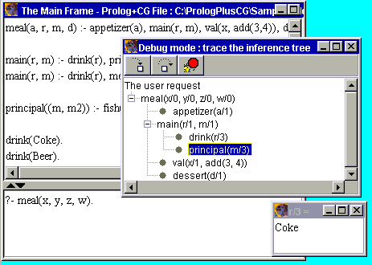
Figure 7 : The visual Debugger of PROLOG+CG
To debug (or trace, follow) the resolution/satisfaction of a request (we assume that the program has been compiled), choose from the menu the option "Build/Debug" and then activate the interpreter as usual. The debug window appears. The current goal is the selected node in the visual tree. Next, you must guide the debugger. Three main actions are provided for that (they are represented by the three icons in the toolBar of the debug window) :
"Inside" iconified by : "Inside the current step" means debug the current goal. If the fact is a fact, a message will annonce it, otherwise the debugger will expand the visual tree and the new current goal is the first "child" of the list. If the current goal can't be resolved and the resolution process backtracks, the debugger will backtrack also to the previous node.
"Skip" iconified by 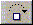 : "Skip" means not debug the current goal. Again, if the current goal can't be resolved and the resolution process backtracks, the debugger will backtrack also to the previous node.
"Stop" iconified by 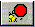 : Stop the debugger; the resolution process will continue without his compagnon !
Visualization of backtracking : the normal resolution process expands the inference tree; the debugger will expand also the visual tree. A backtrack step done by the resolution process involves contraction and backward move in the visual tree. Also, once the resolution process finds one solution and writes it in the console panel, it will continue (by default) to search for other solutions and the user can continue to use the debugger to follow it.
Goal/Variable inspection facility
While debugging, it is very usefull to inspect the instanciation form of a goal and/or the value of a specific variable (if the user wants to do so). The visual debugger of PROLOG+CG allows the two :
inspect the instanciated form of a node : click on the node (left-right, or right-left) to get the instanciated view of the node. The content of the node is changed. You can click again to come-back to the previous content of the node. So a sequence of alternative left/right clicks will switch the content of the node from the generic view to the instanciated one. You can also double-click to get the instanciated view in an auxiliary window.
inspect a specific variable : select, from the main menu, the option "Build/Inspect variable", specifies in the text field the identifier of the variable (like "a/1" , without the double quotes) and press on "OK". An auxiliary window will then appear with the value of the variable. An example of such an auxiliary window is given in Figure 7.
One of the main achievment of PROLOG was/is its use in the development of expert system (ES) shells. Most often, developers used PROLOG to implement an ES shell, on top of it. In PROLOG+CG, the kernel of an ES shell is integrated directly in the interpreter. Thus, a simple check-item, as explained below, will switch the system from the default resolution process to the "ES shell resolution process".
When the default resolution process (the usual interpreter of most PROLOG versions) attempts to resolve a goal that is not a primitive goal, neither a defined goal (no rule can be found so that its head unifies with the goal), it will conclude that the goal can't be resolved and it will backtrack. However, the kernel of an ES shell will proceed otherwise : it will not conclude that the goal can't be resolved, it will ask the user about the truth of the goal ("is the current goal true or false ? : yes/no"). The process will conclude depending on the answer of the user and the user answer will be added to the database, in order to be considered later (and not to ask again and again the same question).
Actually, PROLOG+CG provides only this aspect of the ES shell. Other aspects, like the explication of the resolution process behavior (why/how) and forward chaining will be integrated in the next version of PROLOG+CG.
To activate the "expert system mode" of PROLOG+CG, choose from the main menu the action "Build/expert system mode". The following examples illustrate this PROLOG+CG feature.
Example 1 : Propositional ES
This example illustrates the possibility to define a propositional ES using PROLOG+CG. A propositional ES is an ES where any proposition is represented by a non-analyzable string. This later is considered as a symbole (likewise in propositional logic, we use symbols like p, q, r .. to represent propositions).
"animal is carnivore" :- "animal
eats meat".
"animal is carnivore" :-
"animal has pointed teeth",
"animal has claws",
"animal has forward eyes".
"animal is penguin" :-
"animal is bird",
"animal swims",
"animal is black and white".
"animal is ungulate" :- "animal is mammal", "animal has hoofs".
"animal is ungulate" :- "animal is mammal", "animal chews cud".
"animal is mammal" :- "animal has hair".
"animal is ostrich" :- "animal is bird", "animal has long neck",
"animal has long legs", "animal is black and white".
"animal is zebra" :- "animal is ungulate", "animal has black
stripes".
"animal is tiger" :-
"animal is mammal",
"animal is carnivore",
"animal has twany color",
"animal has black stripes".
"animal is cheetah" :-
"animal is mammal",
"animal is carnivore",
"animal has twany color",
"animal has dark spots".
"animal is giraffe" :-
"animal is ungulate",
"animal has long neck",
"animal has long legs",
"animal has dark spots".
"animal is bird" :- "animal has feathers".
"animal is bird" :- "animal flies", "animal lays
eggs".
To swith on the "expert system mode", the user has to choose from the main menu the option "Build/Expert System Mode". Then, compile the program. Here is a part of an interaction with the system.
?- "animal is tiger".
==> Is it true that : "animal has hair" ? tape y (for yes) or n
(for no) : y
==> Is it true that : "animal eats meat" ? tape y (for yes) or n
(for no) : y
==> Is it true that : "animal has twany color" ? tape y (for
yes) or n (for no) : y
==> Is it true that : "animal has black stripes" ? tape y (for
yes) or n (for no) : y
{}
==> Is it true that : "animal has pointed teeth" ? tape y (for
yes) or n (for no) : n
?-
After this interaction, PROLOG+CG added to the program the following facts :
"animal has twany color".
"animal has black stripes".
"animal eats meat".
"animal has hair".
"animal has pointed teeth" :- fail.
Note how the "no" answer is interpreted : assertion of a new rule with the proposition as the head and the primitive goal "fail" as a tail. The fail goal is no-satisfied by definition.
The reformulation of this ES using predicates/terms instead of non-analyzable String, is left as an exercice.
Example 2 : An ES that uses CG
To illustrate the use of CG in the formulation of ES, we will reformulate the same ES with the of CG only.
Universal > Object, Animal,
Person, Action, State, Attribute.
Object > Hair, Meat, Teeth, Claw, Eye.
Animal > Mammal, Carnivore, Cheetah.
Person > Man.
Action > Eat.
State > Belong.
Attribute > Color, Component, Twany, Dark, Pointed, Forward.
Man = Robert.
Animal = Yala.
[Animal : x]-is->[Cheetah] :-
[Animal : x]-is->[Mammal],
[Animal : x]-is->[Carnivore],
[Animal :
x]-colorOf->[Color]-attr->[Twany],
[Animal :
x]-partOf->[Component]-attr->[Dark].
[Animal : x]-is->[Mammal] :-
[Animal : x]-poss->[Hair].
[Animal : x]-is->[Carnivore] :-
[Animal : x]<-agnt-[Eat]-obj->[Meat].
[Animal : x]-is->[Carnivore] :-
[Animal :
x]-poss->[Teeth]-attr->[Pointed],
[Animal : x]-poss->[Claw],
[Animal :
x]-has->[Eye]-attr->[Forward].
Unlike the first
formulation of the ES, we add to the CG formulation the following
fact, to give a "punch" to our example !
[Animal : Yala]-
<-pat-[Belong]-bnfcre->[Man : Robert],
-colorOf->[Color]-attr->[Twany],
-poss->[Teeth]-attr->[Pointed],
-has->[Eye]-attr->[Forward].
Now, we can ask the following question :
?- [Animal :
Yala]-is->[Cheetah].
==> The goal : [Animal : Yala]-poss->[Hair] cannot be infered
from what is known, so
==> Is it true that : [Animal : Yala]-poss->[Hair] ? tape y
(for yes) or n (for no) : y
==> The goal : [Eat] -
-obj->[Meat],
-agnt->[Animal : Yala] cannot be infered from what is known,
so
==> Is it true that : [Eat] -
-obj->[Meat],
-agnt->[Animal : Yala] ? tape y (for yes) or n (for no) : y
==> The goal : [Animal :
Yala]-partOf->[Component]-attr->[Dark] cannot be infered from
what is known, so
==> Is it true that : [Animal :
Yala]-partOf->[Component]-attr->[Dark] ? tape y (for yes) or
n (for no) : y
{}
==> The goal : [Animal : Yala]-poss->[Claw] cannot be infered
from what is known, so
==> Is it true that : [Animal : Yala]-poss->[Claw] ? tape y
(for yes) or n (for no) : n
?-
After this interaction, PROLOG+CG added to the program the following facts :
[Animal :
Yala]-poss->[Hair].
[Eat] -
-obj->[Meat],
-agnt->[Animal : Yala].
[Animal : Yala]-partOf->[Component]-attr->[Dark].
[Animal : Yala]-poss->[Claw] :- fail.
Remarks :
18. Objects, messages and object-based programming
Sometime and especially for a big knowledge-base system (written in Prolog), it is useful to partition the base in several partitions, contexts or objects, each one includes a set of packets. Of course, such a partition will be really useful only if the inference engine (i.e., the resolution process) is adapted accordingly; resolution of a goal will be restricted to the object where it is defined.
The definition of objects and the contextual resolution of goals form the basis for logic object-based programming.
Object in PROLOG+CG. An object is a set of rules prefixed by terms with an identical signature. An object has the following form :
T1::R1
T2::R2
…
Tn::Rn
Where T1, T2, …, Tn represent terms with the same signature and R1, R2, …, Rn stand for PROLOG+CG inference rules. The common signature to the T1, T2, …, Tn constitutes the descriptor of the object.
Sending a message to an object will correspond to a contextual resolution of a goal.
Sending a message. Sending a message to an object is expressed as a composed goal : T::G, where T represents a term and G a goal (i.e., which could be a term, a CG or a variable). T::G can be read : "send a message to the object OT to execute (satisfy) the goal G". OT is the object which its descriptor is the same as the signature of T.
To satisfy a composed goal T::G, the interpreter locates first an object with a descriptor that corresponds to the signature of the term T. Then it searches inside the object for a prefixed rule Ti::Ri such that T::G can be unified with Ti::HeadOf(Ri) : the interpreter tries to unify T with Ti and the goal G with the head of the rule Ri.
Remark. A rule can be prefixed also by a CG : CG::R. In this case, all the rules of the program that are prefixed by CG constitute one object. Also, a composed goal can have the form : CG::Goal.
This section presents two programs that illustrate the object-based level of PROLOG+CG.
Example 1 (can be found in Samples/Hamza.prlg) :
hamza::[PERSON]-DateOfBirth->[BIRTH]-ptime->[DATE=(5,04,1995)].
hamza::Age(A) :-
| currentDate(D1),
hamza::[PERSON]-DateOfBirth->[BIRTH]-ptime->[DATE = D2], diffDate(D1, D2, A). |
currentDate((14, 12, 1999)).
diffDate((x_Day2, y_month2, z_year2), (x_Day1, y_month1, z_year1), (x_Day, y_month, z_year)) :-
| val(x_Day, sub(x_Day2, x_Day1)),
val(y_month, sub(y_month2, y_month1)), val(z_year, sub(z_year2, z_year1)), /. |
Lest us ask some questions :
?- hamza::[BIRTH]-ptime->[DATE = d].
{d = (5, 04, 1995)}
?- hamza::Age(x).
{x = (9, 8, 4)}
Example 2 (it can be found in Samples/ConcStrs.prlg) :
Universal > Animate, Inanimate, Action.
Action > Extract.
Animate > Person.
Person > Student, Employee.
Student > ResearchAssistant.
Employee > ResearchAssistant.
Inanimate > Text.
Text > Book.
// Conceptual structures for the type Extract constitutes an object
Extract(canon)::[Extract]-
| -agnt->[Person],
-obj->[Inanimate]. |
Extract(schema)::[Extract]-
| -agnt->[Person],
-obj->[Text], -target->[Book]. |
Extract(schema)::[Extract]-
| -agnt->[Person],
-obj->[Inanimate : *1], -manr->[Strong], -target->[Inanimate]-on->[Inanimate : *1]. |
The next goal definition involves some comments ; checkSchemas(v_type)::G :
check if the given information in G can be unified with a schema for the type v_type. First, create a term v_term from the list (v_type, schema), i.e. v_type (schema), v_type will be replaced by its value. Second, search a schema v_schema for the type v_type : v_term::v_schema. Third, check that G can be unified with v_schema.
checkSchemas(v_type)::G :-
| term_list(v_term, (v_type, schema)),
v_term::v_schema, eq(v_schema, G). |
Please note how the expressive power of PROLOG+CG allows for a very abstract but "effective" formulation; search all the schema of a type T so that they verify an information G. Note also how the message (v_term::v_schema) is dynamically constructed; constructed from two variables : the object descriptor is a variable (v_term) and the content of the message is a variable (v_schema).
Let us ask some questions :
Get all the schemas of the type Extract :
?- Extract(schema)::G.
{G = [Extract]-
| -agnt->[Person],
-obj->[Text], -target->[Book]} |
{G = [Extract]-
| -agnt->[Person],
-obj->[Inanimate]<-on-[Inanimate : *1], -manr->[Strong], -target->[Inanimate : *1]} |
Check if the given information ([Extract]-target->[Inanimate]) can be unified with one of the Extract schemas :
?- checkSchemas(Extract)::[Extract]-target->[Inanimate].
{}
{}
And check for another information :
?-checkSchemas(Extract)::[Inanimate]<-from-[Extract]-obj->[Person].
no.
20. Inheritance rules and Object-oriented programming
The object-oriented level of PROLOG+CG is based on the approach proposed by McCabe [15]. Inheritance between objects is defined by inheritance rules.
Inheritance rule. It has the following form :
Term1 <- Term2.
where Term1 and Term2 are two terms that represent two objects. The rule means : the object identified by Term1 is a specialization of the object identified by Term2. If a message that is send to an object can not be satisfied, the interpreter will search an inheritance rule for that object (if it has) in order to delegate the message to its super-object.
The next section gives an example that illustrates object-oriented programming in PROLOG+CG.
The following example can be found in Samples/OORectSqre.prlg. It illustrates how a class (as a set of attributes and a set of methods) can be defined in PROLOG+CG. Let us consider for instance the definition of the class Rectangle. Rectangle is defined as an object (in the sense of PROLOG+CG; an object in this language can represent a class like Rectangle and/or a specific object like Hamza) identified by the term Rectangle(H, W).Its static part (set of attributes) is described by the first rule, represented by a CG. Notes that the definition can have some semantic constraints, like the one expressed in this example : the width should not be inferior to the height of the rectangle. The constraints are formulated in the tail of the rule in order to be evaluated when needed.
The two methods of Rectangle (Perimeter and Surface) are defined as goals inside the object Rectangle(H, W).
Then, another class is defined : Square. This class is defined as a subclass of the class Rectangle. Notes the use of terms arguments to precise the modality of such a relation between the two classes.
Universal > Form, Attribute.
Form > Rectangle.
Rectangle > Square.
Attribute > Perimeter, Surface, Width, Heigth, Beautiful.
Rectangle(H,
W)::[Rectangle]-
-permOf->[Perimeter],
-surfOf->[Surface],
-widthOf->[Width = W],
-heigthOf->[Heigth = H] :- not(inf(W, H)).
Rectangle(H, W)::Perimeter(P) :- val(P, mul(2, add(H, W))).
Rectangle(H, W)::Surface(S) :- val(S, mul(H, W)).
// An inheritance rule.
Square(C) <- Rectangle(C, C).
Square(_)::[Square]-attr->[Beautiful].
Let us consider some requests :
?- Rectangle(4,5)::G.
{G = [Rectangle]-
-permOf->[Perimeter],
-surfOf->[Surface],
-widthOf->[Width = 5],
-heigthOf->[Heigth = 4]}
{G = Perimeter(18)}
{G = Surface(20)}
The next question illustrates the use of constraints. The question is : is it possible to construct a rectangle with Width = 5 and Height = 4 ? The answer to the question is no because the associated constraint is not verified.
?-Rectangle(5,4)::[Width=5]<-widthOf-[Rectangle]-heigthOf->[Heigth=4].
no.
Finally, the next request illustrates method inheritance :
?- Square(4)::Perimeter(P).
{P = 16}
The primitive goal CreateInstance. PROLOG+CG provides the primitive goal CreateInstance(Ident, Term) which enables the creation of an instance Ident from an object identified by Term.
When executed, createInstance(Ident, Term) will add the following inheritance rule to the program : Ident <- Term.
The following request illustrates the use of createInstance (assuming the previous program of Rectangle and Square) :
?- createInstance(sq1, Square(6)), sq1::Surface(S).
{S = 36}
22. PROLOG+CG and JAVA (in collaboration with Pr. Bernard Moulin and his students : Jeremi Gancet, David Nadeau and Olivier Rouleau, from Laval university)
In the current version of Prolog+CG, PROLOG+CG can be activated from a Java program and inversely, Java components (i.e. methods and attributes of classes/objects) can be activated from a Prolog+CG program. Figure 8 gives the part of the primitive goals hierarchy that concerns this side of PROLOG+CG.
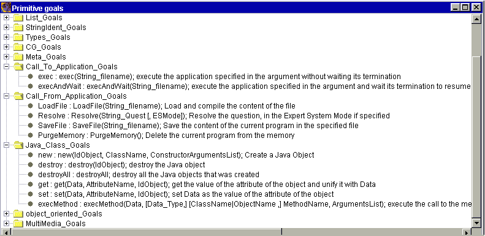
Figure 8 : Primitives of PROLOG+CG related to the relation with JAVA
The Prolog language provides powerful reasoning and symbolic manipulation capabilities, but it is not well suited to implement the interface functionalities (windows, menus, link to data bases, etc.) that object-oriented languages provide. Hence, a good development strategy consists in using each Prolog+CG programming paradigm to implement the functionalities that it best supports. It is recommended to develop programs using Java and to call the Prolog+CG modules when it is appropriate. This section presents a set of primitives that Prolog+CG 2.0 provides in order to call Prolog+CG modules from Java programs. The use of these primitives is illustrated using a simple example.
Four primitives are used to exploit a Prolog+CG program from a Java program
Example 1 :
Assume that we have a Prolog+CG program "FamilyRelations.plgCG" which contains, among other things, the following facts and rules :
[Man : John]-fatherOf->[Man : Peter].
[Woman : Deborah]-fatherOf->[Man : Peter].
[Man : John]-motherOf->[Woman : Clara].
[Person : x]-parentOf->[Man : y] :-
[Person : x]-fatherOf->[Man : y].
[Person : x]-parentOf->[Woman : y] :-
[Person : x]-motherOf->[Woman : y].
From a Java program, we can assert new facts and retract existing facts from the above Prolog+CG program and we can ask questions and get answers.
Here is an example of such an interaction. The Java file :
//PrologPlusCG
is implemented as a Java Package
import PrologPlusCG.PrologPlusCGFrame;
...
public void example() {
... any Java code
// Load a Prolog+CG File
LoadFile("FamilyRelations.plgCG");
... any Java code
// Resolve a question
Vector solutions = Resolve("[Person :
x]-parentOf->[Person : y]");
// Make access to the solutions and to their
content
Hashtable solution;
String valX, valY;
For (Enumeration e = solutions.elements();
e.hasMoreElements();) {
// make access to a
solution
solution = (Hashtable)
e.nextElement();
// make access to the
variable's value for the solution
valX = (String)
get("x");
valY = (String)
get("y");
// make use of the
variable's value
...
};
...
// assert a new fact in the Prolog+CG
program
Resolve("asserta([Man : Marc]-fatherOf->[Man
: Clark], ())");
...
// Save the current program in a new
file
SaveFile("FamilyRels1.plgCG");
// Purge the current program from the
memory
PurgeMemory();
...
Example 2 : A simple syntaxic analyzer
The Prolog+CG program : file "AnalyseSynt.plgCG"
sentence(p, ph(_np, _vp)) :-
read_sentence(p, L),
np(L, L1, _np),
vp(L1, (), _vp), /.
np((_det, _adj, _noun|L), L, np(det(_det), adj(_adj), noun(_noun)) ) :-
det(_art),
adj(_adj),
noun(_noun), /.
vp((_verb|L), L1, vp(verb(_verb), _np)) :-
verb(_verb),
np(L, L1, _np), /.
det("the").
det("a").
adj("beautiful").
noun("girl").
noun("apple").
verb("eat").
verb("eats").
The Java program : file "FrmAnalyseSyntaxique.java"
import
javax.swing.*;
import java.awt.*;
import java.util.*;
import java.awt.event.*;
import javax.swing.JTree.*;
import javax.swing.tree.*;
import PrologPlusCG.PrologPlusCGFrame;
public class FrmAnalyseSyntaxique extends JFrame {
JTextArea jTextArea1 = new JTextArea();
JScrollPane jspTextArea = new JScrollPane(jTextArea1);
JButton BtAnalyse = new JButton();
JButton BtNouvPhrase = new JButton();
JButton BtFin = new JButton();
JPanel jpnl = new JPanel();
JTree jTree1;
JScrollPane jspArbre;
public static void main(String [] args) {
FrmAnalyseSyntaxique unFrm = new
FrmAnalyseSyntaxique();
}
public FrmAnalyseSyntaxique() {
super();
try {
jbInit();
this.show();
}
catch (Exception e) {
e.printStackTrace();
}
}
private void jbInit() throws Exception {
setTitle("Analyse Syntaxique");
getContentPane().setLayout(new
BorderLayout());
setSize(new Dimension(400, 500));
jspTextArea.setMinimumSize(new Dimension(400,
350));
jspTextArea.setMaximumSize(new Dimension(400,
350));
jspTextArea.setBackground(SystemColor.info);
jTextArea1.setText(" ");
BtAnalyse.setLabel("Analyse");
BtAnalyse.setPreferredSize(new Dimension(100,
100));
BtAnalyse.addActionListener(new
java.awt.event.ActionListener() {
public void
actionPerformed(ActionEvent e) {
BtAnalyse_actionPerformed(e);
}
});
BtNouvPhrase.setLabel("Nouvelle Phrase");
BtNouvPhrase.setPreferredSize(new Dimension(100,
100));
BtNouvPhrase.addActionListener(new
java.awt.event.ActionListener() {
public void
actionPerformed(ActionEvent e) {
BtNouvPhrase_actionPerformed(e);
}
});
BtFin.setLabel("Fin");
BtFin.setPreferredSize(new Dimension(100,
100));
BtFin.addActionListener(new
java.awt.event.ActionListener() {
public void
actionPerformed(ActionEvent e) {
BtFin_actionPerformed(e);
}
});
jpnl.setPreferredSize(new Dimension(400, 350));
jpnl.setBackground(SystemColor.info);
getContentPane().add(jspTextArea,
BorderLayout.NORTH);
getContentPane().add(BtAnalyse,
BorderLayout.WEST);
getContentPane().add(BtNouvPhrase,
BorderLayout.CENTER);
getContentPane().add(BtFin, BorderLayout.EAST);
getContentPane().add(jpnl, BorderLayout.SOUTH);
}
void BtAnalyse_actionPerformed(ActionEvent e) {
PrologPlusCGFrame.LoadFile("AnalyseSynt.plgCG");
Vector vect = PrologPlusCGFrame.Resolve("sentence(\""
+ jTextArea1.getText() + "\", x).",
false);
// false in Resolve : indicates that the result shouldn't be
conversed to String
if (vect == null)
JOptionPane.showMessageDialog(this, "The
sentence is ungrammatical.", "Warning",
JOptionPane.OK_OPTION);
else { // Draw the syntaxic tree
Hashtable solution = (Hashtable)
vect.firstElement();
getContentPane().remove(jpnl);
jTree1 = new JTree((Vector)
solution.get("x"));
jspArbre = new JScrollPane(jTree1);
getContentPane().add(jspArbre,
BorderLayout.SOUTH);
show();
};
}
void BtNouvPhrase_actionPerformed(ActionEvent e) {
jTextArea1.setText("");
try {
this.getContentPane().remove(jspArbre);
jspArbre.remove(jTree1);
jTree1.removeAll();
jTree1 = null;
jspArbre = null;
this.getContentPane().add(jpnl, BorderLayout.SOUTH);
}
catch(Exception ex) {};
show();
}
void BtFin_actionPerformed(ActionEvent e) {
System.exit(0);
}
}
Figure 9 shows a snapshot of the directory and the DOS console just before the execution of the above Java file.
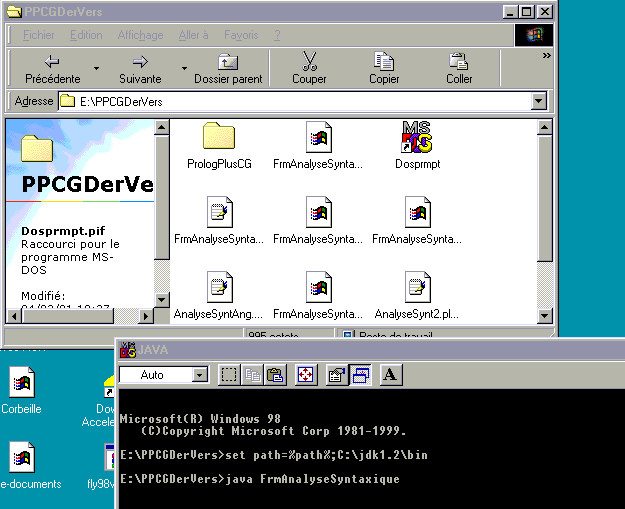
Figure 9 : snapshot of the directory and the DOS console just before the execution of the above Java file
Figure 10 shows the result of the execution of the above Java file.
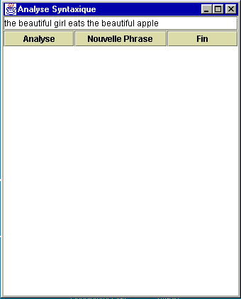 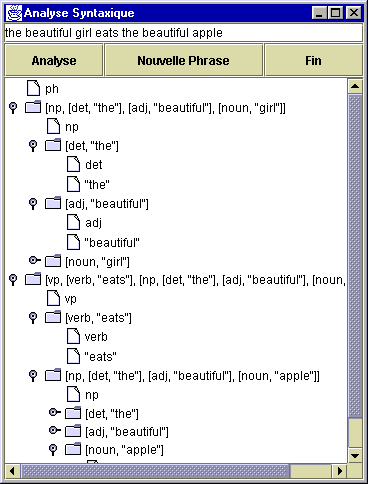
(a) before the analysis (b) after the analysis
Figure 10 : The result of the execution of the Java Program
The four primitives "LoadFile", "Resolve", "SaveFile" and "PurgeMemory" are "external" primitives of Prolog+CG : they are used in a Java Program to make use of a Prolog+CG program. These simple external commands may look like details but they are a tremendous step forward in making the Prolog+CG language a concrete development tool. The interface inability to convey a sense of usability and user-friendliness has long been a major obstacle in using logic programs in real end-user developments.
For instance, it is not unusual to have many lines of Prolog code to enter before making a useful query. In addition, a lot of parameters in these lines of code are very sensible to error and require that the user know the program's internal workings fairly well to be able to get any valuable information from the system. In addition, the answer has the typical Prolog form (an output list) and it is sometimes very hard to read. The output list (i.e. the solution) is neither sorted alphabetically nor numerically. Finally, if the user wants additional information on one of the listed items, an additional query is necessary.
All these considerations find an elegant solution using the Java/Prolog+CG interface. We have used this interface to develop a simple Prolog+CG program (Figure 11). The front/end interface has been implemented using Java and the reasoning part using Prolog+CG. The input screen (Figure 11.a) offers lists and slider bars and actually writes in the Prolog+CG program four assertions for the user, using his selections. A results-screen (Figure 11.b) then presents the output list which can be sorted using any criteria. Additional information on a given list item can be obtained with the simple press of a button (Figure 11.b).
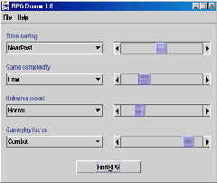 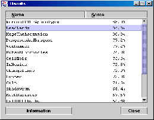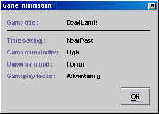
(a) an input screen (b) output screens
Figure 11 : front/end interface for a Prolog+CG program
Using this example, we wanted to emphasize the importance of having interfaces between languages thus allowing each to be used for what it is best at. This Prolog+CG functionality makes it a concrete development tool easily usable in real projects. By allowing evolved logic reasoning to be used in simple user-friendly applications as well as complex Java code, the language moves beyond the traditional academic boundaries.
Note : The The Expert System Mode of Prolog+CG can be exploited from a Java program by using the primitives described in this Section. In this case, the second argument of the primitive "Resolve/2" should be used and should be set to "true".
Prolog+CG 2.5 provides two primitives which allow calling an executable application from a Prolog+CG program. This is another way to make use of Prolog+CG 's capabilities to work as a component of a larger system.
Example :
ex1 :-
eq(x, 45),
exec("Synergy.exe"),
write("Continue without waiting for the end of Synergy..."), /.
ex2 :-
eq(x, 45),
execAndWait("Synergy.exe"),
write("Continue after the end of Synergy ..."), /.
The result of the execution of ex1 :
Prolog+CG 2.5 provides several primitives allowing the use of Java code and providing access to object-oriented capabilities. Indeed, new Java objects can be created, used and destroyed from a Prolog+CG program. These objects are considered as "global objects" of a Prolog+CG program.
This section presents these primitives and briefly illustrates their use.
JavaClass NewObjectIdent = new JavaClass ConstructorArguments;
With calling Java code from Prolog+CG predicates and calling Prolog+CG from Java code, the loop is closed and the language offers both a powerful new representational programming paradigm and an integrated way to access it conveniently.
Example 1 : this simple example shows how an object (of a primitive or a defined Java class) can be created and how the object methods can be invoked.
explePPCGToJava(x,y) :-
new(vct, "java.util.Vector", ()),
execMethod(void, vct, "addElement", (4)),
execMethod(void, vct, "addElement", (6)),
execMethod(void, vct, "addElement", (10)),
execMethod(void, vct, "addElement", (14)),
execMethod(x, vct, "size", ()),
execMethod(y, vct, "elementAt",
(2)).
?- explePPCGToJava(x,y).
{x = 4, y = 10}
?-
The next example shows the extendable feature of Prolog+CG. Suppose for instance that someone needs a primitive to convert a string to an integer. Instead of adding a new primitive to Prolog+CG to do that, the user can use Java directly for that. It corresponds to a call to a method of a class in Java that do such a job :
?- execMethod(c, "java.lang.Integer", "valueOf", ("345")), sup(c, 300).
{c = 345}
Example 2 : An application
that calls Java code : SHRDLU-PCG
To illustrate the expressive power of Prolog+CG and to show its
usefulness for the development of natural language processing
applications, we developed SHRDLU-PCG, a reformulation in Prolog+CG
of some aspects of the classic SHRDLU program [10]. In the
Prolog+CG program (see below), one can note the natural use of CG
as a data structure, beside term and list, and also the very use of
variables in CG : a variable can hold for a CG, a concept, a
concept type, a referent, a co-referent, a concept description (or
value) and a relation. This flexibility is very important from a
programming perspective.
SHRDLU-PCG also illustrates how Java classes (and their attributes
and methods) can be used from a Prolog+CG program.
SHRDLU-PCG simulates a very restricted natural language dialog
between a user and a robot that operates in a block-world. The
robot can create, move, push and pop 3D blocks. The robot is able
to "understand" declarative, imperative and interrogative sentences
and to react accordingly. The 3D animation that results from such a
dialog is monitored thanks to the "cooperation" of the Prolog+CG
program SHRDLU-PCG with a Java3D program which provides the
capability to create a 3D canvas, to fill it with 3D objects (cube,
cylinder, sphere, pyramid) and to do some actions on them.
First, let us consider how the semantic analysis of a sentence and
especially the analysis of an imperative sentence is carried out.
Examples of imperative sentences are "create a red pyramid
pyramid4.", "push the red pyramid on the big cube." and "move the
blue sphere at the left of cube1.".
As the components of the sentence are analyzed, CGs that represent
their semantic meaning are constructed and then joined. This
dynamic construction of CGs is in itself an important feature of
Prolog+CG.
// lexicon(Word,
SyntaxicCategory, TypeOrCGCanon)
lexicon("push", verb,
[Push]-
-obj->[Object],
-on->[Object] ).
lexicon("create", verb,
[Create]-obj->[Object]-colorOf->[Color]).
Lexicon("sphere", noun, Sphere).
Verb(V, _CGCanon) :- lexicon(V, verb, _CGCanon).
// Syntax of imperative-sentence = Verb NP Complement.
// Complement = [Prep NP].
imperative_sentence((V|P1),
[Proposition : G]-mode->[Modality : imperative]) :-
Verb(V, G_V),
NP(P1, P2, E_NP1, S1),
eq([T_Verb]-obj->E_N_G1, G_V),
maximalJoin(G_V, E_N_G1, S1, E_NP1, G1_S1,
_),
complement(P2, T_Verb, G1_S1,
G).
Comment on Verb/2 : checks if V is a verb, if so, return
the canon of the verb.
Comment on imperative_sentence/2 :
imperative_sentence(P, G) receives a sentence P, as a list of
words, and produces a CG G that represents its meaning. It starts
by recognizing the verb and then the noun phrase. The canon of the
verb (G_V) is then joined with the CG corresponding to the noun
phrase (S1). This maximal join should satisfy however the following
constraint : the concept that represents the head of the noun
phrase has to be joined with the concept that represents the object
of the verb. So we have to locate these two concepts in the two CGs
respectively and then we have to consider them as "entry concepts"
for the maximal join in question; this later should start by the
join of the two entry concepts.
The entry concept for the CG G_V that represents the semantic
meaning of the verb is located by the following goal
:
eq([T_Verb]-obj->E_N_G1, G_V).
To understand the effect of the above goal, let's consider this
request :
?- eq(G_V,[Create]-obj->[Sphere:sphere1]),
eq([T_Verb]-obj->E_N_G1, G_V).
{G_V = [Create]-obj->[Sphere:sphere1], T_Verb = Create,E_N_G1 =
[Sphere:sphere1]}
As a result of the above unification eq/2, the variable "E_N_G1"
refers to the concept in G_V that represents the object of the
verb. Note how the variable "T_Verb" stands for the type of the
concept and the variable "E_N_G1" stands for the whole concept.
The defined goal NP/4 : NP(P1, P2, E_NP1, S1) returns the graph S1
that represents the meaning of the noun phrase as well as the entry
concept E_NP1 in S1.
After the analysis of the verb and the noun phrase, the maximal
join of their semantic representations is done, producing a CG
G1_S1 and then, the semantic analysis of the complement is
initiated. If the complement is specified, its semantic
representation will be computed and then joined with the CG
G1_S1.
After the semantic analysis of an imperative sentence, the "robot"
will consider its meaning as an order to be executed. Hence and as
a result of such an execution, the knowledge of the "robot" will
change (for instance, the position of an object has to be modified)
as well as the 3D animation that shows the visual simulation of the
robot behavior. The following Prolog+CG code shows how all these
aspects are related.
Shrdlu :-
new(aShrdlu_Canvas3D,
"PrologPlusCG.Shrdlu_Canvas3D", ()),
read_sentence(_sentence),
ShrdluDialog(_sentence), /.
ShrdluDialog(("end", ".")) :- /.
ShrdluDialog(_sentence) :-
Semantic_Analysis(_sentence,
_CG),
_CG,
read_sentence(_s),
ShrdluDialog(_s),
/.
Comment on the main goal Shrdlu : this goal initiates the
3D simulation as well as the restricted natural language dialog. In
particular, it specifies a call to the primitive goal "new" in
order to create an instance of the defined Java 3D class
Shrdlu_Canvas3D. Such a creation will involve, among other actions,
the display of a frame that contains a "robot" (Figure 10.a).
Comment on the goal ShrdluDialog : in the above definition of
"ShrdluDialog" goal, note how the meaning of the sentence (i.e. the
CG "_CG" that results from the semantic analysis of "_sentence") is
put as a goal to be interpreted. Thus, in the case of an imperative
sentence, the goal-variable "_CG" will be bound to the following CG
: [Proposition : G]-mode->[MODALITY : imperative]
The proposition G (the variable G will be bound to a CG) is
interpreted as an order that should be satisfied. Here is the
Prolog+CG rule that naturally formulates this interpretation :
[Proposition : G]-mode->[MODALITY : imperative] :-
G.
Each order is then executed according to its semantic
interpretation. For instance, the order to create an object with a
specific name and color is defined as follows : first assert the
existence of the object in the data base, then create a physical
object in the 3D canvas. Each kind of object (Cube, Sphere,
Pyramid) is created by a corresponding method in the defined Java
class "Shrdlu_Canvas3D" (Figure 10.b).
[Create]-obj->[T_Obj
: _IdObj]-colorOf->[Color : C] :-
asserta(object([T_Obj :
_IdObj]-colorOf->[Color : C]), ()),
execMethod(void, "PrologPlusCG.Shrdlu_Canvas3D",
T_Obj, (_IdObj, C)),
/.
?-
Shrdlu.
|:create the green sphere sphere1.
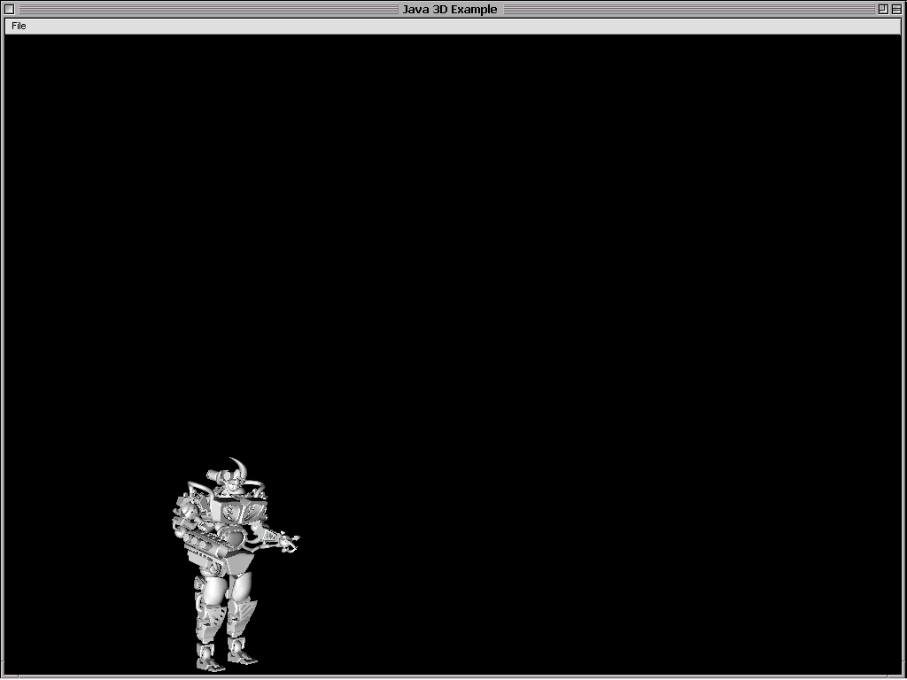 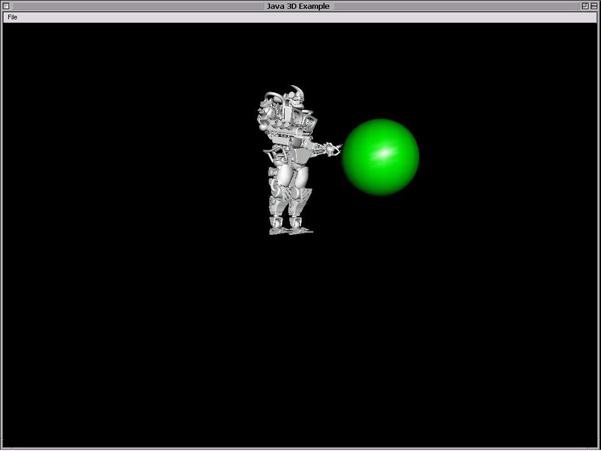
(a) (b)
Figure 10 : SHRDLU_PCG in action
Appendix : The grammar of PROLOG+CG
Prolog+CGProgram = (Rule | Comment) {(Rule | Comment)} .
Rule = Specialization_Rule | Instantiation_Rule |
| Generalization_Rule | Inference_Rule. |
Specialization_Rule = TypeIdentifier ">" TypeIdentifier
| {"," TypeIdentifier} "." . |
Instantiation_Rule = TypeIdentifier "=" ReferentIdentifier
| {"," ReferentIdentifier} ".". |
Generalization_Rule = ObjDescriptor "<-" ObjDescriptor "." .
Inference_Rule = Head [":-" Tail] "." .
Tail = Goal {"," Goal}.
Goal = SimpleGoal ["::" SimpleGoal].
SimpleGoal = Term | CG | Variable .
Head = SimpleHead ["::" (SimpleHead | Variable)] .
SimpleHead = (Term | CG).
ObjDescriptor = Term .
Term = Identifier [ "(" PrlgCGData {"," PrlgCGData} ")" ] .
List = "(" [ PrlgCGData {"," PrlgCGData} [ "|" Variable ] ] ")" .
PrlgCGData = Number | Boolean | Identifier | String |
| Variable | List | Term | CG . |
CG = Concept [OutBranch | InBranch | Branchs] .
Branchs = "-" (OutBranch | InBranch)
| {"," (OutBranch | InBranch) } [","] . |
OutBranch = "-" RelationIdentifier "->" CG .
InBranch = "<-" RelationIdentifier "-" CG .
Concept = "[" Type [":" Referent] ["=" Value] "]" .
Type = TypeIdentifier | Variable .
Referent = ReferentIdentifier | Multi_Referent | Variable.
Value = PrlgCGData .
Comment = "//" {Character} .
TypeIdentifier, ReferentIdentifier,
| RelationIdentifier = Identifier . |
Multi_Referent = "*" {Digit} .
Number = Digit { Digit } .
Boolean = "true" | "false" .
Identifier = Letter Letter { Letter | Digit | "_" } .
String = """ { Letter | Digit | "_" } """ .
Variable = ("_" { Letter | Digit | "_" }) | Letter |
| ( Letter (Digit | "_") { Letter | Digit | "_" } ). |
References